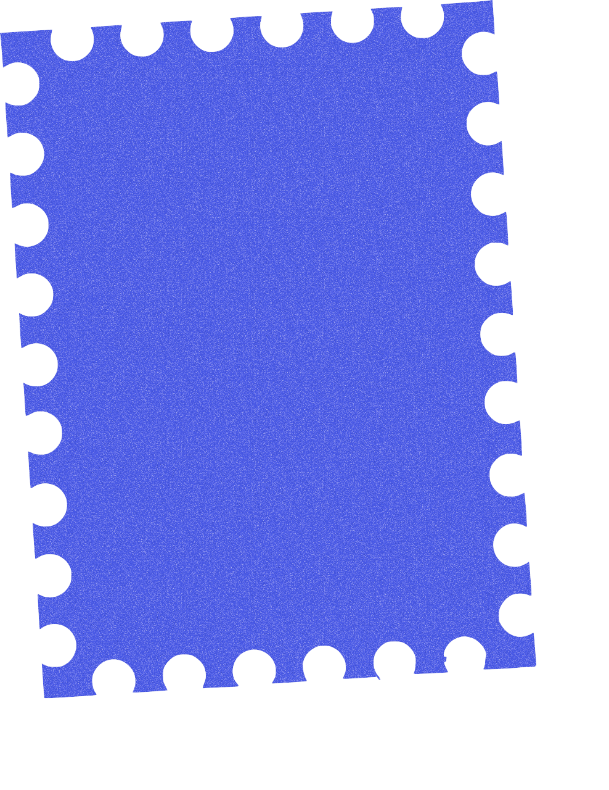
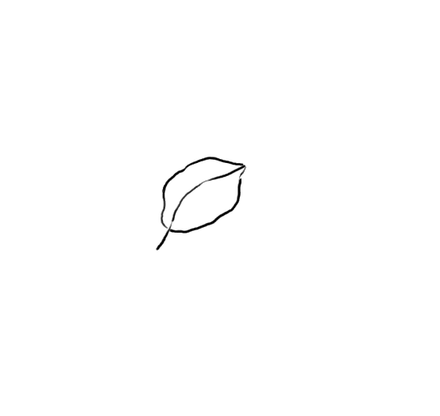

Lately I'm building with AI ◁°_°▷ and getting my hands on with analog craft. It's how I keep the taste calibrated. Check my playground here
Hello, I'm Risti!
a product builder specialize in design and research.
In the past 10+ years, I've:

I treat portfolio as a trailer, not the full film.

Lately I'm building with AI ◁°_°▷ and getting my hands on with analog craft. It's how I keep the taste calibrated. Check my playground here